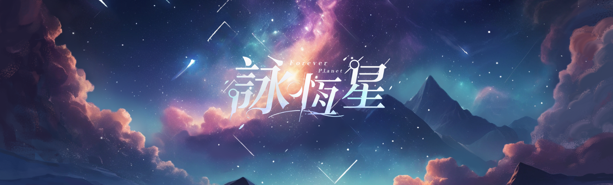

3D Modeling
從剪影與姿態開始，讓角色、場景與道具保有清楚輪廓，也留下情緒的空白。

Design Focus
從剪影與姿態開始，讓角色、場景與道具保有清楚輪廓，也留下情緒的空白。
用冷色陰影、微弱暖光與材質噪點，把灰模推向更接近插畫與音樂影像的氣質。
讓滑鼠視差、模型旋轉與圖像切換形成觀看節奏，作品集不只是圖片排列。
Interactive FBX Preview
滑鼠拖曳旋轉，滾輪縮放，右鍵拖曳平移。
3D Asset
這個作品以物件模型展示為核心，呈現藥包的造型輪廓、比例與材質細節。此區塊直接載入 FBX 檔，讓觀看者能以滑鼠檢視模型的空間關係。
Selected Works
VR Game / 60919 南同俱樂部
由南臺科技大學學生團隊「60919 南同俱樂部」打造的第三人稱 VR 解謎遊戲，於放視大賞 2023 開放第一、二章 Boss 關卡試玩。玩家在 VR 環境中以第一視角扮演自己，並以第三人稱操作主角艾蒙，透過時間神力、時之輪與時之石解開場景機關。
我在團隊中負責企劃主導，並參與場景與部分特效製作，協助建立低多邊、暖色光影與時間機關視覺語言，讓 VR 探索、解謎與角色陪伴感能在同一個場景中成立。
Interactive Model
VR Game Project
Environment Design
Character Modeling
Prop / Hard Surface
Workflow
先建立剪影、視覺重心與世界觀關鍵字，讓後續模型細節都有一致方向。